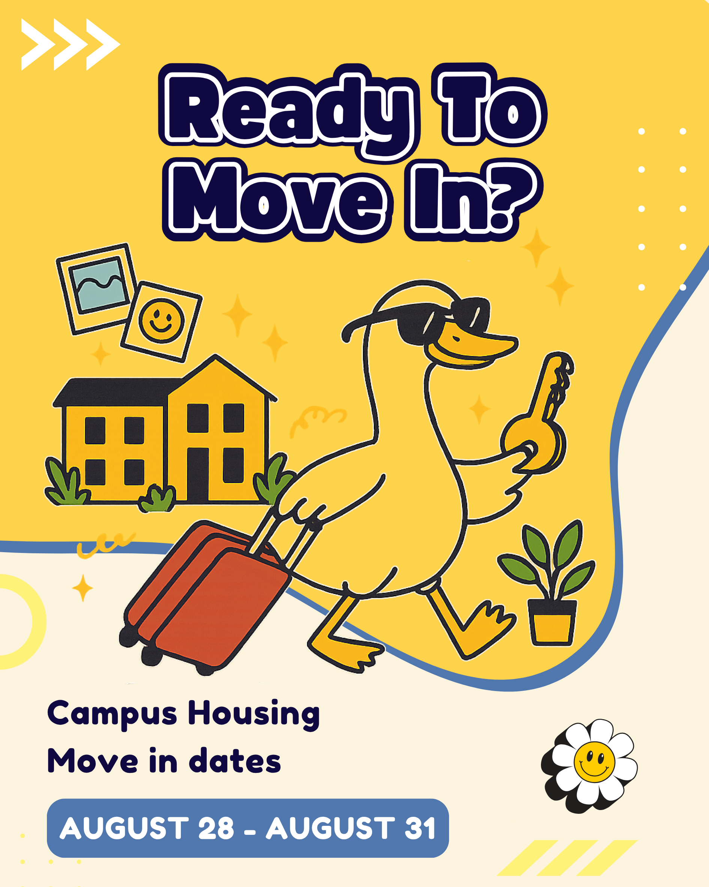
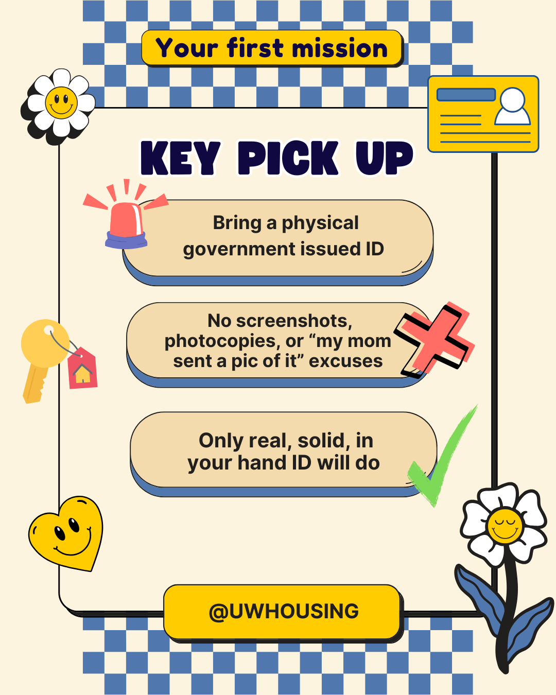
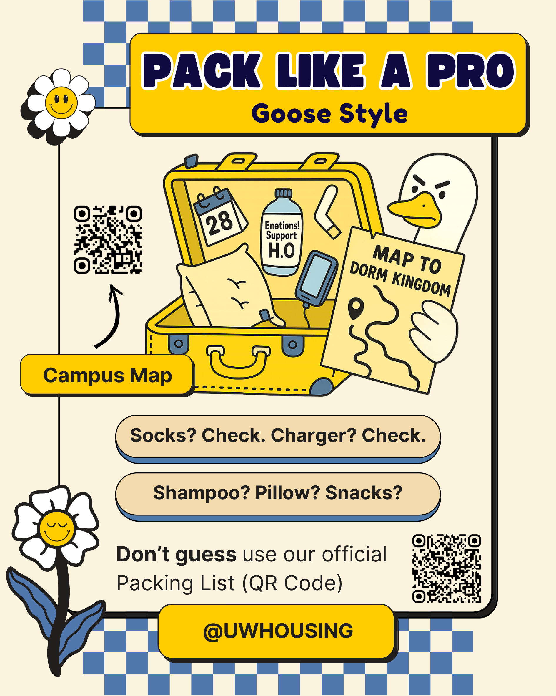
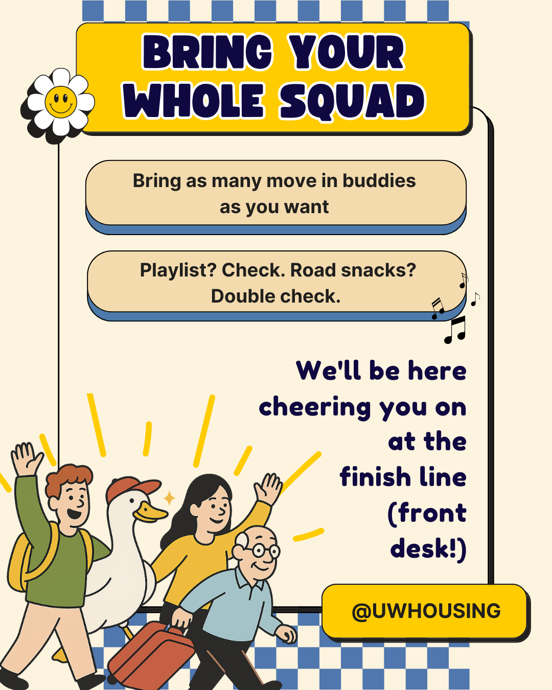
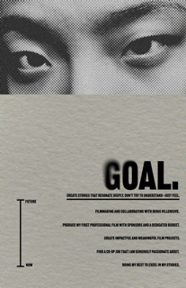
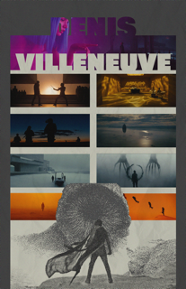

More to come
Continuing the exploration.
Moving into residence is overwhelming. This social media series uses humor ("Goose Style") and clear visuals to break down complex logistics—from ID requirements to packing lists—into bite-sized, engaging missions.
View Full Case Study



A series of posters created using Adobe Ps and Ai, exploring themes of cinematic resonance, personal passion, and future goals through typography and layout.
A good film creates deep resonance. It dissolves the screen, making the audience feel completely immersed and part of the unfolding story.
Visualizing a deep passion for cinema through expressive typography and dynamic layout design.
(Note: The poster image is blurred because the original file size exceeded GitHub's limits. The full content is transcribed below.)
"Create stories that resonate deeply. Don't try to understand—just feel."
A timeline from Now to Future:
• Doing my best to excel in my studies.
• Find a co-op job I am genuinely passionate about.
• Create impactful and meaningful film projects.
• Produce my first professional film with sponsors.
• Ultimate Goal: Collaborating with Denis Villeneuve.
A poster tribute to favorite director Denis Villeneuve, capturing the essence of his atmospheric and visceral storytelling style.





The Experiment: I screen-recorded myself using Xiao Hong Shu (Little Red Book) for 30 minutes to analyze the "Endless Scrolling Mechanism" and its impact on my attention span.
The Result: Out of 88 videos encountered, my viewing habits revealed a desperate need for speed.
Explorations in texture, composition, and event promotion.


Continuing the exploration.